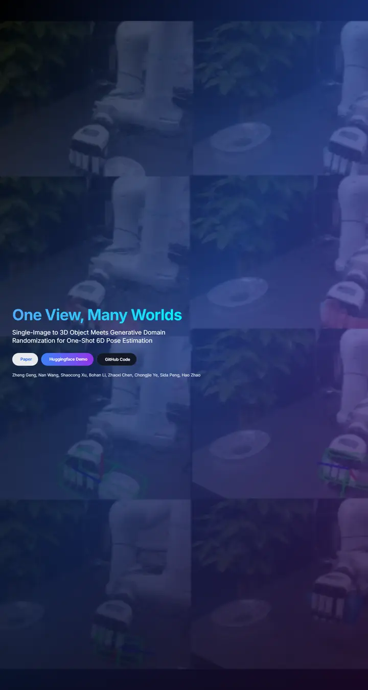

One View, Many Worlds: Single-Image to 3D Object Meets Generative Domain Randomization for One-Shot 6D Pose Estimation
A product launch at midnight: a tiled video wall sinking into indigo, an ice-cyan gradient headline floating over it, and blueprint-gridded cards waiting below the fold.

Checked against the rendered page. Only the hero is visible in the screenshots (h-screen stretches in the tall capture); below-the-fold sections documented from DOM probes. Page shows no venue or affiliations.
Why it is here
Dark gradient overlay on a tiled video wall with a cyan gradient title and a gradient demo button. A bold startup-like hero not found elsewhere in the picks, though only the hero is visible in the capture.
Overview
Color Palette
Typography
Inter 400
One View, Many Worlds: Single-Image to 3D Object Meets Generative Doma
Abstract · Method · Results · BibTeX — 0123456789
Inter 600
One View, Many Worlds: Single-Image to 3D Object Meets Generative Doma
Abstract · Method · Results · BibTeX — 0123456789
Inter 700
One View, Many Worlds: Single-Image to 3D Object Meets Generative Doma
Abstract · Method · Results · BibTeX — 0123456789
Spacing & Shape
Page Modules
Guidelines
More like this

CRAFT: Training-Free Cascaded Retrieval for Tabular QA
A tidy product manual in pale blueprint blue, where every stage wears its own colored edge.

Efficient Self-Evaluation for Diffusion Language Models via Sequence Regeneration
A tidy stack of rounded cards washed in a blue-violet-apricot dawn, signed with a gradient wordmark.

FIGMA: Towards FIne-Grained Music retrievAl
A music journal on warm paper: a heavy Newsreader headline under a red kicker, big red serif numerals for the results, and figures resting in soft cream frames.

GuideDog: A Real-World Egocentric Multimodal Dataset for Blind and Low-Vision Accessibility-Aware Guidance
A quiet monograph page: one serif column, oxblood ink for the links, and a table that blushes only at its own row.

LaMI: Augmenting Large Language Models via Late Multi-Image Fusion
A careful conference handout: Noto Serif headings, navy outlined buttons and soft grey bands taking turns.

PairCoder++: Pair Programming as a Universal Paradigm for Verified Code-Driven Multimodal and Structured-Artifact Generation
A crisp white product page: a blue announcement strip, ink-black pill buttons and every figure on a soft-shadowed card.